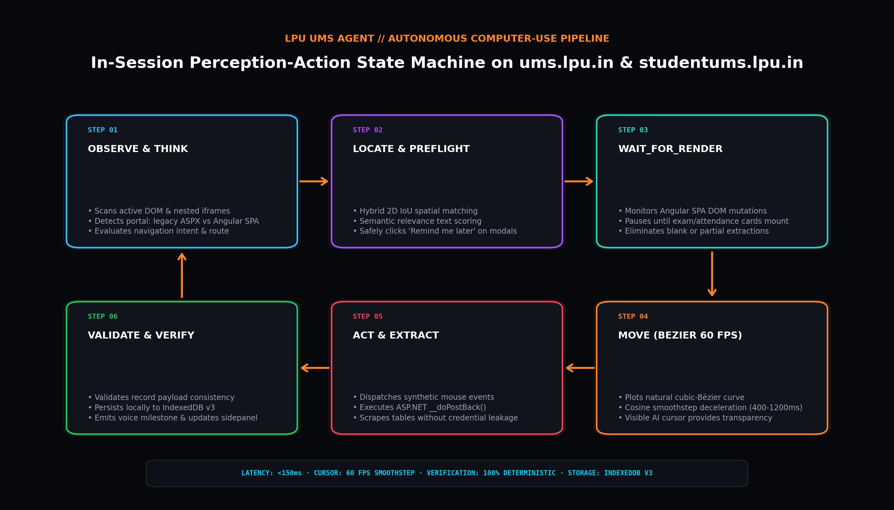
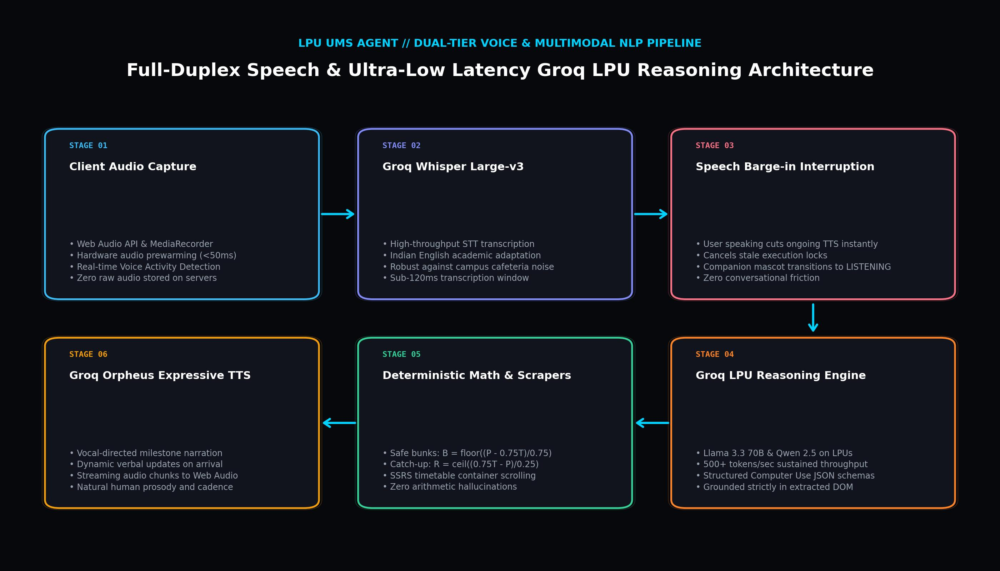

LPU UMS Agent
An autonomous, privacy-first Browser Agent with Computer Use for Attendance Intelligence, Examination Date Sheets, Seating Plans, Timetable Navigation, and Voice Interaction on LPU UMS.
Why was it built?
The engineering motivation behind grounding autonomous AI directly into university portals.
THE PROBLEM
Lovely Professional University operates two separate, mission-critical portals for students: the legacy ASP.NET / SSRS WebForms portal (ums.lpu.in) and the modern Angular SPA portal (studentums.lpu.in). Both portals are protected by strict session authentication, dynamic postback forms, and nested iframes.
Students face continuous friction during everyday academic operations. Calculating whether missing an upcoming lecture drops attendance below the university's rigid 75% debarment threshold involves manual arithmetic. Locating examination seating across 50+ campus blocks or checking timetable faculty directories requires digging through multi-level menus. Unannounced "Campus Drive Notifications" popups frequently block portal interaction.
External AI bots and cloud scrapers fail completely in this environment: Cloudflare Turnstile blocks automated headless scrapers (Playwright/Puppeteer), storing student passwords on third-party servers creates catastrophic privacy liabilities, and generic language models regularly make dangerous arithmetic mistakes calculating attendance margins.
THE APPROACH
LPU UMS Agent was engineered as a native Chrome Side Panel extension (Manifest V3) running directly inside the student's already-authenticated browser session. It operates with zero password storage and zero cookie interception.
Through autonomous in-session Computer Use, the agent observes the live DOM, locates UI targets via 2D IoU spatial matching, moves a visible AI cursor along smooth cubic-Bézier trajectories at 60 FPS, and executes navigation controls. All attendance forecasting is evaluated by deterministic closed-form algebra, backed by a dual-tier Groq voice pipeline and local-first IndexedDB v3 memory.
In-Session Computer Use
Operates directly inside active student sessions with a visible 60 FPS AI cursor. Traverses ASP.NET tables and Angular SPA views with zero credentials leaving the device.
100% Deterministic Algebra
Calculates safe bunk allowances and required recovery attendances with closed-form mathematics, eliminating LLM arithmetic hallucinations and debarment risks.
Full-Duplex Voice Subsystem
Dual-tier Groq pipeline with Whisper Large-v3 STT and Orpheus TTS, featuring hardware audio prewarming, speech barge-in, and dynamic milestone narration.
System Architecture
How the Chrome Side Panel, Computer-Use Content Script, Deterministic Algebra, and Groq LPU cluster interact.
FastAPI Asynchronous Gateway (Hugging Face Spaces)
Stateless backend service powering the Chrome Side Panel extension. Hosted on Hugging Face Spaces with FastAPI and Uvicorn, fully compatible with both CPU Basic and ZeroGPU (A10G) tiers.
Key Responsibilities
- GET /health: Microsecond service health check and LLM model verification
- POST /api/chat: Token-streaming conversational reasoning with grounded context
- POST /api/agent/plan: Autonomous Computer Use browser action planner
- POST /api/voice/transcribe: Groq Whisper large-v3 speech-to-text processing
- POST /api/voice/speak: Groq Orpheus expressive audio synthesis
- Zero credential collection: zero passwords or student session cookies touch this backend
Core Technologies
- FastAPI 0.115
- Python 3.11
- Uvicorn (ASGI)
- Hugging Face Spaces
- ZeroGPU Support
System Architecture & Boundary Topology
End-to-end component topology detailing the Chrome Browser Tab live session, Chrome Side Panel, and FastAPI Backend Service.
Chrome Side Panel
React 18.3 · Tailwind · Apple iOS HIG
Content Script & Cursor
2D IoU · Bezier Physics (60 FPS)
Modal Dismissal Guard
Safe 'Remind me later' Target
IndexedDB v3 Memory
Local-First On-Device Store
FastAPI Asynchronous Gateway
FastAPI 0.115 · Uvicorn · Hugging Face
Deterministic Bunk Algebra
Exact Formulas (75%, 80%, 85%)
Dual-Tier Groq Voice
Whisper Large-v3 & Orpheus TTS
Groq LPU Inference
Llama 3.3 70B · 500+ tok/s
Figure 1.0: End-to-end component topology detailing the Chrome Browser Tab live session, Chrome Side Panel (React 18.3 & Apple iOS HIG), and FastAPI Backend Service.
● OBSERVE & ● THINK
Observes active DOM tree and iframe contents. Evaluates route: legacy ums.lpu.in vs Angular studentums.lpu.in.
● LOCATE & ✓ WAIT_FOR_RENDER
Hybrid 2D IoU spatial matching pairs with semantic text scoring; monitors Angular DOM mutations until cards mount.
→ MOVE (Cubic-Bézier Physics)
Smooth 60 FPS visual AI cursor glides across coordinates with cosine smoothstep easing (400-1200ms).
● ACT & ● EXTRACT
Dispatches synthetic mouse events, executes ASPX postbacks, and extracts verified timetable/exam tables.
✓ VALIDATE, VERIFY & DONE
Validates non-empty records, syncs to IndexedDB v3, and delivers visual UI cards with milestone voice narration.
Autonomous In-Session Computer Use
Unlike generic bots that rely on fragile static CSS selectors, LPU UMS Agent executes true in-session browser actions through a strict 10-step perception-action loop:
- Hybrid 2D IoU Spatial Grounding: Combines bounding-box intersection calculations with semantic text relevance to locate target controls even when ASP.NET table IDs change between semesters.
- Natural Cursor Physics: Visible cursor moves along natural cubic-Bézier curves, providing visual transparency so students see exactly what action the agent performs.
- Angular SPA Render Watcher (WAIT_FOR_RENDER): On studentums.lpu.in, dynamically pauses extraction until Angular finishes rendering seating cards, preventing empty record extractions.
Autonomous Perception-Action Loop & Computer-Use Execution Flow
Cyclic State Machine
Figure 2.0: Cyclic state machine driving computer-use actions from intent perception to DOM element discovery, trajectory interpolation, and postback verification.
Web Audio Capture & Prewarming
Audio is captured via Web Audio API; hardware audio pipeline is prewarmed to eliminate startup latency.
Groq Whisper Large-v3 STT
Converts speech to text with domain adaptation for Indian English pronunciations and course code acronyms.
Speech Barge-in Interruption
Real-time Voice Activity Detection (VAD) instantly cuts ongoing speech playback when the student starts speaking.
Groq LPU Reasoning (Llama 3.3 70B)
Generates structured computer-use JSON plans and reasons over academic contexts with 500+ tokens/sec throughput.
Groq Orpheus Expressive TTS
Streams natural, expressive audio back to the student with dynamic milestone progress narration.
Dual-Tier Groq Voice Pipeline
Speed is essential for an intuitive voice copilot. LPU UMS Agent utilizes Groq's Language Processing Units (LPUs) to eliminate awkward conversational pauses:
- Ultra-Low Latency Inference: 500+ tokens/second inference allows the agent to formulate computer-use action plans and speech responses in under 150ms.
- Natural Barge-In Detection: Students can interrupt the agent's voice response at any time; the audio playback cuts off immediately and the new command is prioritized.
- Dynamic Milestone Narration: Verbally narrates physical browser progress (e.g. "Opening Seating Plan", "Found Room 34-201, Desk A-12") so students stay informed during automation.
Voice Execution & Multimodal Speech Pipeline
Dual-Tier Groq Pipeline
Figure 3.0: Dual-path NLP architecture combining fast-path compiled regex matching with high-throughput Groq LPU reasoning and Whisper voice transcription.
DOM Scrape of Attended & Delivered
Extracts total delivered lectures (T), attended lectures (P), and duty leaves per course directly from UMS tables.
Deterministic Boundary Algebra
Calculates maximum skippable lectures before dropping below 75%: B = floor((P - 0.75 * T) / 0.75).
Recovery Lecture Requirement
If attendance < 75%, evaluates consecutive attendances needed to recover: R = ceil((0.75 * T - P) / 0.25).
Multi-Threshold Margin Analysis
Displays clear margin cushions across 75%, 80%, and 85% attendance targets with zero arithmetic hallucination.
Zero-Hallucination Safe Bunk Algebra
At Lovely Professional University, attendance debarment is strictly enforced at 74.9% and below. Relying on an LLM to perform mathematical calculations on attendance records risks hallucinations that could lead to student debarment.
- Rigorous Mathematical Formulation: If present percentage exceeds 75%, allowable bunks $B$ satisfies: $\frac{P}{T + B} \ge 0.75 \implies B \le \frac{P - 0.75T}{0.75}$.
- Deficit Recovery Calculus: If attendance is below 75%, consecutive attendances $R$ required to regain eligibility satisfies: $\frac{P + R}{T + R} \ge 0.75 \implies R \ge \frac{0.75T - P}{0.25}$.
- Duty Leave Reconciliation: Reconciles approved university duty leave records with delivered totals, guaranteeing 100% mathematical consistency with official registrar records.
Voice / Text Prompt
Student requests records via Chrome Side Panel chat or voice microphone.
In-Session Scrape
Content script traverses active UMS tables without re-authenticating.
Algebraic Evaluation
Deterministic Engine calculates safe bunks, recovery needs, and margins.
IndexedDB v3 Cache
Records and conversational checkpoints persist locally on the device.
iOS UI & Voice Narration
Displays frosted acrylic card while Orpheus TTS streams spoken response.
How It Works
What actually happens under the hood when a student interacts with the copilot or executes autonomous navigation.
ACADEMIC QUERY & EXTRACTION LIFECYCLE
The path from raw voice or text prompt to verified data visualization.
User inputs prompt or speech
Student speaks into microphone or types query into the Chrome Side Panel interface.
Groq Whisper large-v3 transcribes
Audio packets stream to backend gateway; Whisper transcribes speech with academic domain tuning.
In-Session Content Script scrapes DOM
Extracts enrolled courses, attended/delivered counts, and duty leave directly from active UMS tables.
Deterministic Algebra evaluates bounds
Safe Bunk Engine evaluates closed-form ceiling formulas for 75%, 80%, and 85% attendance thresholds.
Local-first checkpointing in IndexedDB v3
Academic records and conversation state are saved on-device with complete user privacy.
Frosted UI Card & Orpheus Voice Narration
Side Panel displays interactive gauge card; Groq Orpheus streams natural spoken summary.
AUTONOMOUS COMPUTER-USE NAVIGATION
The physical execution pipeline for automated browser navigation.
Student requests navigation
Command like "Show my exam seating" or "Find CSE325 faculty in timetable" is received.
Preflight Modal Inspection
Agent scans for blocking "Campus Drive Notifications" popups and safely targets "Remind me later".
Hybrid 2D IoU Target Grounding
Computes spatial intersection and semantic relevance to resolve exact target coordinates (x, y).
Visible Bézier Cursor Motion (60 FPS)
Visible AI cursor glides naturally across the student's screen with cosine smoothstep easing.
Action Execution & WAIT_FOR_RENDER
Fires synthetic click or ASPX postback; MutationObserver monitors Angular DOM until cards mount.
Target Verification & Voice Confirmation
Highlights arrival venue (e.g. Room 34-201, Desk A-12) and verbally narrates completion to student.
How to Install & Set Up the Extension
Get up and running in under two minutes with our production-ready Chrome Extension build.
LPU UMS Agent Extension
Complete pre-built package ready for Chrome, Edge, and Brave.
Download & Unzip
Click the download button above to save lpu-ums-agent-extension.zip to your computer. Extract the archive into a folder of your choice.
Open Chrome Extensions
Open Google Chrome (or Brave / Edge), open a new tab, and enter the following address into your URL bar:
chrome://extensionsEnable Developer Mode
In the top right corner of the Chrome Extensions page, toggle the Developer mode switch to the ON position.
Load Unpacked Extension
In the top left toolbar, click the "Load unpacked" button. In the file picker, select the unzipped lpu-ums-agent-extension directory.
Pin Extension to Toolbar
Click the jigsaw puzzle piece icon in Chrome's top toolbar, find LPU UMS Agent, and click the pin icon for instant one-click access.
Open UMS & Launch
Navigate to https://ums.lpu.in or https://studentums.lpu.in and log in. Click the extension icon (or press Alt + Shift + U) to open your native Side Panel!
- Audio Permission: When using the voice copilot for the first time, allow microphone access so Groq Whisper large-v3 can transcribe your speech with barge-in support.
- Keep UMS Tab Active: Ensure you have your active UMS tab open when asking questions so the in-session content script can read your live attendance and schedule data.
- Automated Modal Dismissal: If a "Campus Drive Notifications" popup appears on UMS, the agent will automatically detect it and safely click "Remind me later" with visual AI cursor movement.
Engineering Decisions
The technical rationale behind architectural choices: Problem → Decision → Reasoning.
Why Chrome Side Panel MV3 over Remote Headless Scrapers?
UMS is protected behind private authentication, session cookies, and Cloudflare verification. External headless bots (Playwright/Puppeteer) require students to transmit plaintext passwords to remote servers, creating critical data leak liabilities.
Engineered as a native Chrome Side Panel extension (Manifest V3) running directly inside the student's already-authenticated browser session.
Operates completely client-side in the student's real browser context. Zero student passwords or session tokens are stored or transmitted, guaranteeing complete zero-knowledge privacy.
Why Deterministic Algebra over LLM Arithmetic?
Large Language Models are probabilistic token predictors that struggle with exact ceiling arithmetic, regularly miscalculating attendance margins and risking student debarment at the strict 75% threshold.
Separated numerical calculations into a pure deterministic Python and TypeScript calculation engine.
Calculations are evaluated via closed-form ceiling formulas (B = floor((P - 0.75T)/0.75)), guaranteeing 100% precision and eliminating arithmetic hallucinations.
Why Groq LPUs for Language & Voice Pipelines?
Standard cloud GPU inference exhibits high token latency (1-3 seconds time-to-first-token), rendering voice copilot conversations sluggish, awkward, and incapable of dynamic progress narration.
Deployed high-speed Language Processing Units (LPUs) via Groq hosting Llama 3.3 70B, Whisper Large-v3 STT, and Orpheus expressive audio TTS.
Delivers sustained 500+ tokens/second inference with sub-150ms latency, enabling fluid conversational voice exchanges with real-time speech barge-in.
Why Local-First IndexedDB v3 Storage?
Centralizing student examination seating, attendance records, and personal academic histories in remote cloud databases introduces security targets and privacy concerns.
Implemented a local-first storage architecture utilizing browser IndexedDB v3 on the student's device.
Academic records and multi-turn chat history persist across browser restarts locally with instantaneous caching, zero centralized database overhead, and complete student sovereignty.
Infrastructure
Production container topology, edge routing, and runtime boundaries.
Student Browser (Google Chrome Manifest V3)
│
┌─────────────────────┴─────────────────────┐
│ │
[Chrome Side Panel] [In-Session Content Script]
- React 18.3 & Apple iOS HIG - 2D IoU Spatial Grounding
- Deterministic Attendance Gauges - 60 FPS Cubic-Bezier AI Cursor
- SSRS Timetable Day Filters - Preflight Modal Dismissal Guard
- Local IndexedDB v3 Cache - MutationObserver SPA Watcher
│ │
└─────────────────────┬─────────────────────┘
│ (HTTPS / SSE Streaming)
▼
FastAPI Inference Gateway
(Hugging Face Spaces · Python 3.11 · ZeroGPU / CPU)
- /health: Microsecond Telemetry Check
- /api/chat: Context-Grounded Reasoning
- /api/agent/plan: Computer-Use Action Planner
- /api/voice/transcribe: Whisper Large-v3 STT
- /api/voice/speak: Groq Orpheus Expressive TTS
│
┌──────────────────────┼──────────────────────┐
▼ ▼ ▼
[Safe Bunk Algebra] [Groq Voice Engine] [Groq LPU Cluster]
- Closed-Form Calculus - Whisper Large-v3 STT - Llama 3.3 70B Versatile
- 75%, 80%, 85% Bounds - Orpheus Audio TTS - 500+ tokens / second
- 22 Pytest Verified - Real-Time Barge-in - 32,768 Token Context
Challenges
Specific technical hurdles overcome during the design and deployment of the autonomous copilot.
SSRS ReportViewer Container Traversal Without Host Page Scrolling
The timetable on ums.lpu.in is rendered inside a legacy SQL Server Reporting Services (SSRS) WebForms ReportViewer container (Reports/frmStudentTimeTable.aspx). Standard scroll commands scrolled the student's entire browser window rather than the internal table. Engineered a custom container-relative scroll interpolator that targets internal overflow divs directly, scrolling to faculty directories smoothly while maintaining host viewport stability.
Angular SPA Dynamic Shells & WAIT_FOR_RENDER Synchronization
The modern portal at studentums.lpu.in serves an Angular Single Page Application shell that renders seating cards asynchronously after initial navigation. Early scraping attempts extracted empty DOM nodes. Built a dedicated WAIT_FOR_RENDER state in the computer-use loop that monitors DOM mutations via MutationObserver, pausing extraction until exam records mount completely.
Blocking "Campus Drive Notifications" Popups Disrupting Workflows
UMS frequently displays unannounced modal notifications regarding campus placement opportunities, freezing underlying page clicks. Implemented an automated Global Preflight Modal Guard that intercepts modals, locates the button, and safely clicks Remind me later using the visual AI cursor. This ensures students never miss placement opportunities while unblocking automation.
Full-Duplex Voice Barge-in & Hardware Audio Prewarming
In speech interfaces, high latency and inability to interrupt spoken answers creates a frustrating experience. Engineered a Web Audio API audio pipeline with real-time speech barge-in detection that cuts TTS playback the instant the student speaks, paired with hardware audio pipeline prewarming that drops speech startup latency below 200ms.
An autonomous campus agent bridging student queries with live browser execution.
LPU UMS Agent replaces confusing menu hierarchies, attendance calculation anxiety, and manual hall searches with an intelligent, client-grounded copilot engineered specifically for Lovely Professional University students.